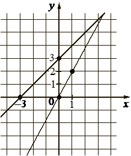

Исходные: редакторские связи
Предварительный разбор; не официальный эталон.
На рисунке изображены графики двух линейных функций, пересекающиеся в точке . Найдите абсциссу точки .

3.1 Функция, способы задания функции. График функции. Взаимно обратные функции. Чётные и нечётные функции. Периодические функции
Исходный разбор · Основание назначений / аудит
| ID | Действие | Результат | Входные ссылки | KC (группа, без порядка) |
|---|---|---|---|---|
| s1 | Считать отмеченные точки двух прямых по клеткам координатной сетки | Первая прямая проходит через (-3;0) и (0;3), вторая — через (0;0) и (1;2). | condition | k1 → graph_coordinates |
| s2 | Восстановить уравнения прямых по двум точкам каждой | Для первой k=(3-0)/(0+3)=1, b=3: y=x+3. Для второй k=2, b=0: y=2x. | s1 | k2 → literal_f253b50b98a1 |
| s3 | Записать условие пересечения графиков | Общая точка имеет одинаковые x и y, поэтому x+3=2x. | s2 | k3 → graph_intersection |
| s4 | Решить полученное линейное уравнение | x=3, y=6; обе прямые дают y=6. Искомая абсцисса 3. | s2; s3 | k4 → linear_equation |
| Method | Название | Шаги |
|---|---|---|
| m1 | Восстановить прямые по отмеченным точкам и приравнять значения | s1 → s2 → s3 → s4 |
| ID | Название | Описание |
|---|---|---|
| k1 | Считывать координаты отмеченной точки с графика | По масштабу и осям декартовой сетки определить координаты отмеченных точек; не восстанавливать точные значения по непомеченному эскизу. |
| k2 | Восстанавливать линейную функцию по двум точкам | По двум точкам с разными абсциссами найти коэффициенты y=kx+b; вертикальная прямая в этот класс не входит. |
| k3 | Сводить пересечение графиков к равенству значений | Для графиков y=f(x) и y=g(x) при общей абсциссе составить f(x)=g(x), сохраняя области определения. |
| k4 | Решать линейное уравнение с числовыми коэффициентами | Преобразовать аффинное равенство одной переменной и получить его множество решений; переносы и деление входят в одно действие. |